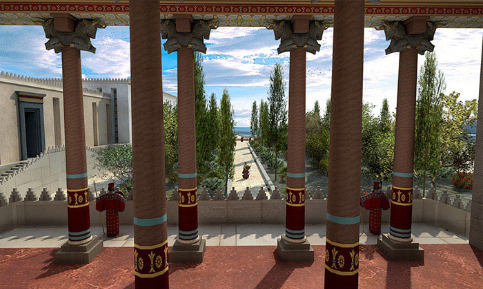

The palace known as Tachara (winter palace) was built by the king Darius I the Great. Unfortunately, he was unable to see the finished product and the palace was finished by his son Xerxes. Most of the building is quite intact compared to the rest of the city, meaning that building was mainly untouched when Alexander the Great destroyed the city
 Back to Index